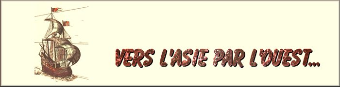
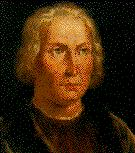
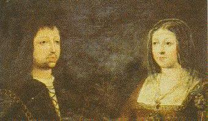
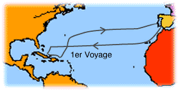
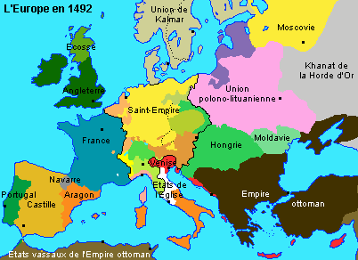

| La fin du
Moyen-âge
Une date charnière dans l'histoire occidentale: le 29 mai 1453, la chute de Constantinople entre les mains des Turcs ottomans. C'est la fin de la longue période historique appelée Moyen Âge. Les derniers savants et artistes byzantins se réfugient en Italie où ils seront à l'origine de la Renaissance. En France, s'achève la guerre de Cent Ans qui est le dernier conflit de type féodal. Avec la victoire du Turc, l'Occident est coupé de ses racines grecques et orientales. Ses liaisons commerciales avec la Chine et les Indes, qui bénéficiaient de la protection des Byzantins, sont interrompues. Or, ce commerce de la route de la soie, est essentiel à l'Europe, il faut trouver un autre chemin pour continuer à se procurer les épices, teintures, parfums, pierres précieuses, corail, tissus exotiques comme la soie… |
|
| Les européens
connaissent alors trois continents
Ils cherchent donc par la mer le chemin qui les ramèneront en Orient pour continuer leur commerce. De hardis Portugais font plusieurs voyages en contournant l'Afrique, et Vasco de Gama atteint le premier les Indes en 1498. Mais ce chemin est long, coûteux et dangereux. |
|
|
 |
Christophe Colomb (1451-1506) regarde plutôt vers l'Ouest. On sait depuis l'Antiquité que la terre est ronde, en coupant par l'Atlantique il pense arriver rapidement en Asie, dans le Cipangu (Japon) dont parle Marco Polo. Mais cela prend de l'argent, il propose son projet à plusieurs rois qui le refusent. |
|
 Après des années d'efforts, il trouve les subventions nécessaires auprès des souverains d'Espagne, Ferdinand d'Aragon et Isabelle de Castille. Au roi, il promet de l'or, à la reine, des âmes. En effet, la reine est très pieuse et on lui fait miroiter que l'islam, dont l'empire s'étend depuis la chute de Constantinople, pourrait être pris à revers par l'Asie (les prêtres catholiques convertissant les peuples d'Asie avant que les islamiques ne les convertissent). Tout ceci n'est qu'illusions. Mais un empire en émergera finalement. Et c'est bien de l'or et de l'argent par tonnes qui afflueront dans les ports de Castille et iront irriguer l'économie de l'Europe. |
|
| Après deux mois de navigation Christophe Colomb touche terre le 12 octobre 1492, convaincu d'avoir atteint le bord du continent asiatique. Il fera quatre voyages et mourra dans cette conviction. |
 |
| Colomb est le découvreur officiel de l'Amérique, mais plusieurs étaient venus avant lui. On les retrouve dans les légendes du Moyen-âge, dans le folklore irlandais, et les traces archéologiques laissées par les vikings et les basques. | |
| La course vers
l'Ouest est ouverte...

Arbitre du monde chrétien, le Pape Alexandre VI intervient dès 1493. Il tire une ligne arbitraire du pôle nord au pôle sud, en passant pas les Açores: ce qui est à l'est est aux portuguais et, à l'ouest, aux espagnols. !!! Cela ne fait évidemment pas l'affaire des autres nations qui veulent leur part du butin. L'Angleterre réagit rapidement et Henri VII commandite un voyage de découverte qu'il confie lui aussi à un italien, Giovanni Caboto. Ce dernier aborde le 24 juin 1497 sur une terre dans le nord de l'Atlantique (probablement au Cap-Breton). Lui aussi croit avoir atteint l'Asie. |
|
| Il y a là des richesses à exploiter, au moins celles des pêcheries. Des explorations de cette "terre neuve" ont lieu par les Anglais, mais aussi par les Portugais qui, bien qu'ayant obtenu la partie est du monde, envoient une mission de découverte en 1500, persuadés que cette "terre neuve" est à l'est de la ligne papale de démarcation. Il reste de ces voyages portuguais le premier rapport ethnographique que l'Europe ait reçu sur les Amérindiens de l'Amérique du Nord écrit par Miguel Real. | |
| 1513, l'explorateur espagnol Balboa traverse l'étroite bande de Panama et découvre un autre océan. Mystère pour tous: le globe terrestre est plus gros qu'on l'imaginait. Entre l'Atlantique et l'Asie, il faut ajouter un second océan de largeur aussi inconnue que celle des terres neuves qu'on vient de découvrir. De ces terres, on distingue l'Amérique (ce qu'on appelle aujourd'hui l'Amérique du Sud) et les Antilles. Mais au nord, comment le monde est-il fait? Cette même année, Ponce de Leon touche la Floride. | |